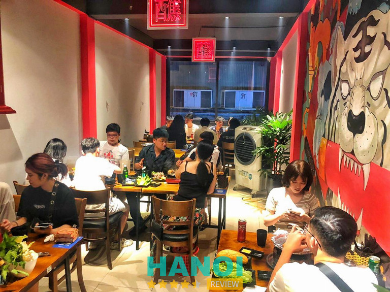
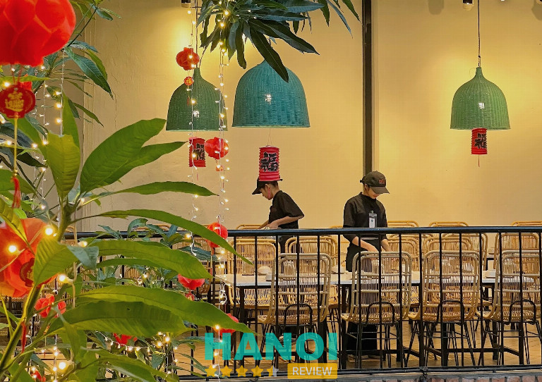
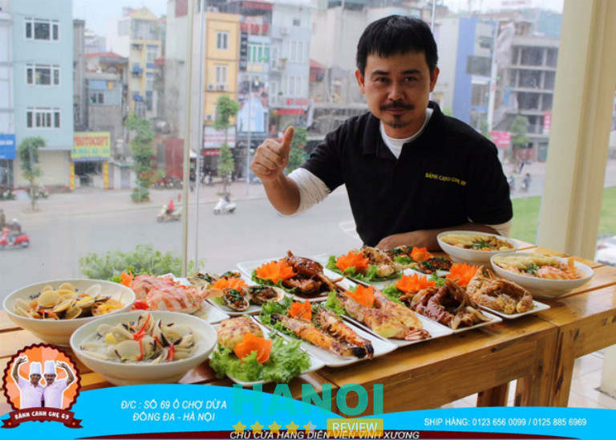
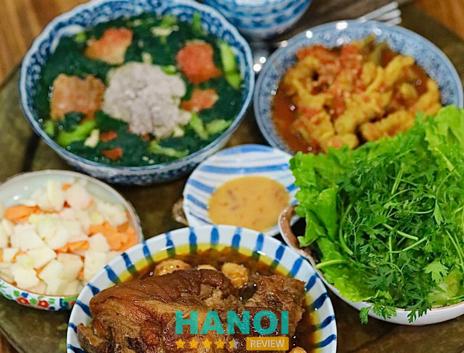
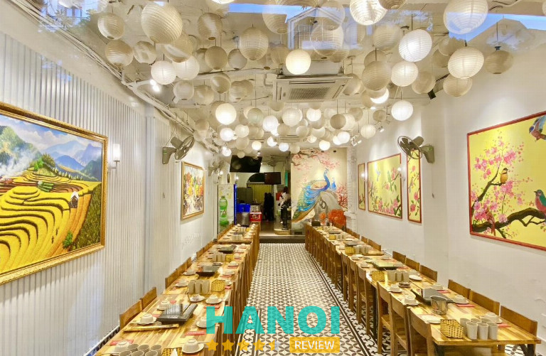
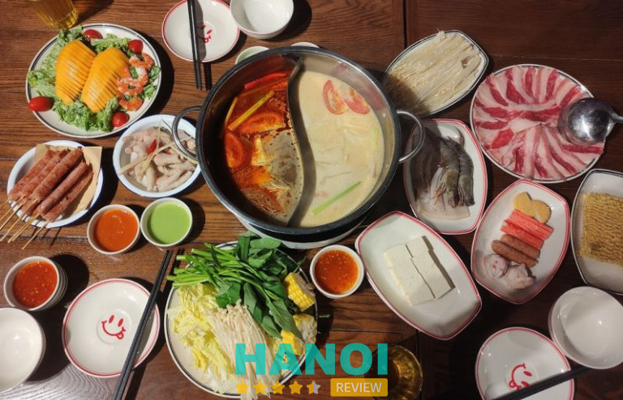
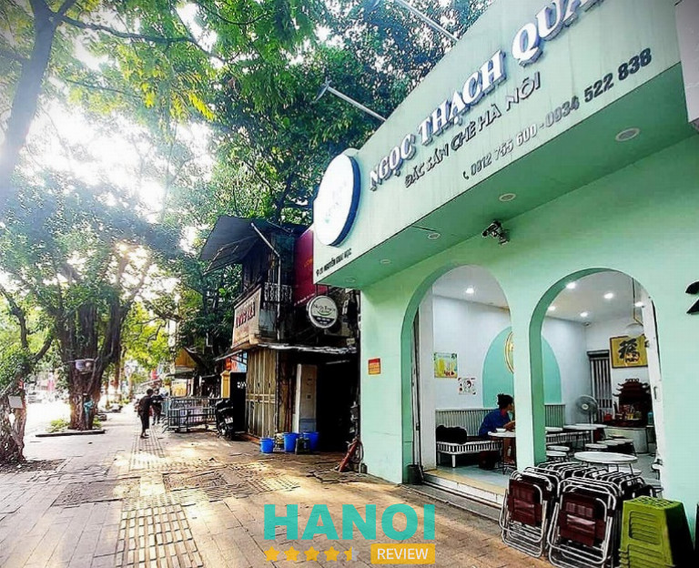
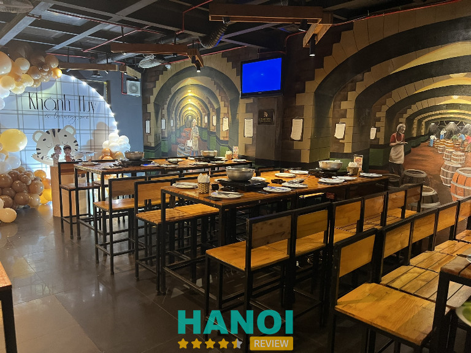
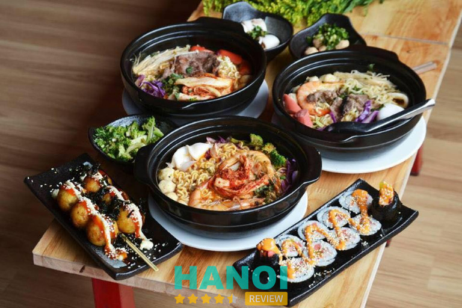
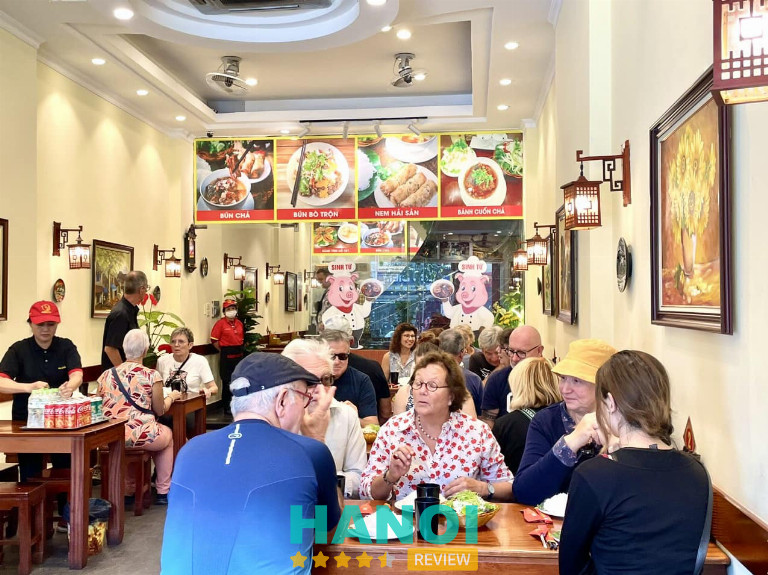

10 Quán ăn tại quận Đống Đa nổi tiếng thơm ngon, phục vụ tốt
Để giúp du khách trong và ngoài nước trải nghiệm nền ẩm thực độc đáo, các Quán ăn tại quận Đống Đa luôn có những món ăn đặc sắc, nổi tiếng, giá cả hợp lý. Với chất lượng phục vụ tốt cùng menu đa dạng, các dịch vụ ăn uống tại đây luôn được đánh giá cao và thu hút nhiều thực khách ghé thăm.
Top 10 Quán ăn tại quận Đống Đa nổi tiếng thơm ngon, phục vụ tốt
Là một trong những quận lớn nhất tại Hà Nội, Đống Đa từ lâu đã được nhiều người biết đến với nhiều hàng quán đa dạng, đầy đủ các món ăn ngon, hấp dẫn. Đặc biệt nhiều hàng quán đã được rất nhiều du khách yêu thích và để lại nhiều ấn tượng sâu sắc.
Trong bài viết hôm nay. HaNoiReview sẽ giới thiệu đến mọi người 10 Quán ăn tại quận Đống Đa nổi tiếng thơm ngon, phục vụ tốt nhất.
Nhúng Quán
Với các món nướng, lẩu, Nhúng Quán được rất nhiều thực khách ưa chuộng, đánh giá cao là một trong những món ăn ngon tại quận Đống Đa. Đến đây mọi người không chỉ tận hưởng được nhiều món tươi ngon mà còn thư giãn với không gian thoáng mát, sạch sẽ với ba tầng rộng rãi, thiết kế với phong cách Hong Kong, phù hợp cho các nhóm đông người.
Với menu đa dạng, các món với set nướng, lẩu thái chua cay, hải sản, luôn đảm bảo độ tươi ngon, nhập mới mỗi ngày và đảm bảo vệ sinh an toàn thực phẩm. Bên cạnh đó, nhờ vào nguồn nguyên liệu thơm ngon, các món ăn luôn được ướp đậm vị, nước sốt đa dạng còn mang lại trải nghiệm ẩm thực tuyệt vời nhất cho khách hàng.

Nhân viên tại quán còn rất nhiệt tình sẵn sàng tư vấn các combo ngon nhất và phục vụ theo yêu cầu của khách hàng khi có yêu cầu. Bàn ăn được bày trí một cách linh hoạt, phù hợp cho cả các buổi tiệc nhóm, gia đình hoặc dịp gặp gỡ bạn bè. Đến với Nhúng Quán, tại đây luôn mang đến cho thực khách trải nghiệm ẩm thực đặc sắc và hài lòng. Khách hàng không chỉ thưởng thức được nhiều món ngon mà còn có thể đặt bàn để tổ chức các buổi tiệc sinh nhật, liên hoan,…
Ngoài ra Nhúng Quán còn dành tặng đến khách hàng nhiều ưu đãi giảm giá, các chương trình tặng kèm giúp mọi người tiết kiệm được chi phí. Bên cạnh đó quán còn hỗ trợ đặt hàng, giao hàng tận nơi tiện lợi cho khách hàng ở xa. Để cải thiện dịch vụ, quán còn nhận các ý kiến đóng góp, phản hồi từ phía khách hàng và dành tặng nhiều chương trình giảm giá nếu đi vào những dịp lễ tết.
Thông tin liên hệ:
- Địa chỉ: 20 phố Văn Tuyết, Quận Đống Đa, Hà Nội
- Điện thoại: 098 269 00 55
- Email: dinhquanghung67@gmail.com
- Fanpage: FB.com/nhungquan20nguyenvantuyet/
Xem thêm thông tin về: 5 Quán cơm tấm tại Hà Nội chuẩn vị thơm ngon, giá cả phải chăng
Hẻm Quán
Nằm giữa thành phố tấp nập, Hẻm Quán khiến nhiều người ấn tượng khi có không gian bình yên, xung quanh có nhiều canh xanh xum xuê thoáng đãng, gần gũi với thiên nhiên. Màu sắc chủ đạo của quán là màu nâu trầm, từ bàn ghế gỗ đơn giản cho đến tường màu sắc mộc mạc, nên nên sự ấm áp và gần gũi.
Khi đến với Hẻm Quán, thực khách sẽ được trải nghiệm với hương vị đặc trưng của Sài Gòn, tất cả các món ngon đều được tái hiện một cách tinh tế và xuất sắc. Các món như cá đuối nướng, cơm cháy kho quẹt thấm hấp, hay bò một nắng muối,….

Tất cả các thực khách đến với Hẻm Quán đều rất hài lòng với những món ăn lẫn thái độ phục vụ của các nhân viên. Nhiều khách hàng còn ấn tượng với các chụp đèn được làm từ tre nứa bện tỉ mỉ trên các góc phòng, tạo ra ánh sáng ấm áp, nhẹ nhàng. Trải qua nhiều năm hoạt động, Hẻm Quán còn mang đến nhiều sự hài lòng cho khách hàng khi mang đến nhiều ưu đãi, chương trình giảm giá vào các dịp đặc biệt như lễ, tết,…
Khách hàng khi muốn thưởng thức ẩm thực có thể dễ dàng liên hệ để đặt bàn trước và được nhân viên tư vấn trước về các món ăn. khách hàng còn có thể yên tâm khi các nguyên liệu tại đây đều được nhập mới mỗi ngày, đảm bảo độ tươi ngon, hấp dẫn. Để biết thêm thông tin cũng như xem trước hình ảnh các món ăn do quán cung cấp mọi người có thể truy cập vào website, fanpage.
Thông tin liên hệ:
- Địa chỉ: 161 Hoàng Cầu, Quận Đống Đa, Hà Nội
- Điện thoại: 024 3538 1838
- Email: hemquan.customer@gmail.com
- Website: hemquan.vn
- Fanpage: FB.com/hemquan.vn
Bánh Canh ghẹ 69
Bánh Canh ghẹ 69 không chỉ nổi tiếng với khẩu vị độc đáo mà còn ấn tượng với không gian sang trọng hiện đại. Thiết kế trắng và vàng tạo nên sự ấm cúng, thân thiện, làm cho thực khách cảm thấy thoải mái và thư giãn khi đến thưởng thức món ngon.
Từ những nguyên liệu tươi ngon, Bánh Canh ghẹ 69 luôn kết hợp với gia vị tinh tế, tạo nên hương vị hấp dẫn đặc trưng không giống với nơi nào khác. Cùng với nước dùng sệt, ngọt thanh, hòa quyện với mùi thơm nhẹ của tỏi, thực khác khi thưởng thức món bánh canh nóng đã vô cùng ấn tượng và khen ngợi với hương vị độc đáo khó cưỡng.

Món bánh canh tại đây có sợi to mềm, không bị nát, ghẹ được bóc sẵn, giúp thực khách dễ dàng thưởng thức mà không cần lo lắng về công đoạn chuẩn bị, Ngoài ra, bánh canh còn được bổ sung thêm cả cá viên, chả cá tôm, tạo ra sự ngon miệng và phong phú cho bữa ăn.
Trải qua nhiều năm hoạt động, quán ăn luôn đặt chất lượng nguyên liệu lên hàng đầu. Với sự giám sát kỹ càng từ chủ quán, sợi bánh canh luôn được làm thủ công từ bột nhập khẩu miền Nam, đảm bảo mỗi cọng bánh canh đều mang đến sự tươi ngon và độ đặc trưng riêng.
Quán còn đảm bảo chất lượng khi được các trang báo chí đưa tin cũng như được rất nhiều người biết đến với đầu bếp nổi tiếng, thân thiện, tay nghề cao. Ngoài ra, với tiêu chí kinh doanh hiệu quả, các món bánh canh luôn được nấu mới mỗi ngày và đảm bảo mỗi tô khi phục vụ cho khách đều nóng ấm, ngon nhất. Cùng với thái độ phục vụ thân thiện chắc chắn mọi người sẽ có được trải nghiệm ẩm thực tuyệt vời.
Thông tin liên hệ:
- Địa chỉ: 11 Ô Chợ Dừa, Quận Đống Đa, Hà Nội
- Điện thoại: 083 656 0099
- Email: phucnguyenservice@gmail.com
- Fanpage: FB.com/BanhCanhGhe69
Xem thêm thông tin về: 5 Quán bún riêu tại Hà Nội thơm ngon đậm đà, lưu ngay để thử
Bếp Của Mẹ
Xuất phát từ niềm đam mê nấu ăn và làm bánh cho gia đình, Bếp Của Mẹ có rất nhiều món ăn ngon như cơm, bún, phở, mì lẩu và những món đặc trưng thơm ngon giúp khách hàng tận hưởng ẩm thực ngon nhất. Mỗi món ăn tại Bếp Của Mẹ đều chứa đựng tình yêu và sự đam mê giúp khách hàng cảm nhận giống như việc mẹ chuẩn bị đồ ăn với tình cảm chân thành nhất.

Với menu hơn hàng trăm món ăn hấp dẫn, Bếp Của Mẹ luôn đáp ứng đầy đủ nhu cầu ăn uống từ những món bánh truyền thống đặc sản đến các món trong mâm cơm gia đình. Với phương châm phục vụ mọi lúc mọi nơi, Bếp Của Mẹ còn hỗ trợ đặt hàng, giao hàng cho khách trong nội thành một cách nhanh chóng và tiện lợi.
Khách hàng còn có thể để trải nghiệm không gian quán với màu sắc nhẹ nhàng, cách bài trí tối giản nhưng cực kỳ bắt mắt, gây ấn tượng khi thưởng thức cũng như món ăn thơm ngon đậm vị. Thực khách khi đến trải nghiệm ẩm thực tại đây sẽ được nhân viên phục vụ tư vấn tận tình, cũng như làm theo các yêu cầu được đề ra một cách nhanh chóng. Những món ngon tại Bếp Của Mẹ luôn được cam kết tươi mới, được nấu mỗi ngày, đảm bảo an toàn khi dùng và mang lại nhiều lợi ích cho sức khỏe.
Thông tin liên hệ:
- Địa chỉ: 8 Ngõ 67 Thái Thịnh, Quận Đống Đa, Hà Nội
- Điện thoại: 078 546 6688
- Email: bepcuame@gmail.com
- Website: bepcuame.vn
- Fanpage: FB.com/bepcuame.com.vn
Quán Lẩu Đức Trọc
Nếu bạn đang tìm không gian lý tưởng để thưởng thức những món lẩu thơm ngon bổ dưỡng thì hãy đến với Quán Lẩu Đức Trọc. Tại đây là nơi hội tụ những món đặc sản được chế biến tươi sống, các món thơm ngon hấp dẫn, giúp khách hàng có thể tổ chức với các buổi tiệc, liên hoan, sinh nhật,…
Thực đơn tại đây có hơn 50 món lẩu từ chính tay những đầu bếp giàu kinh nghiệm chế biến và lựa chọn. Khi dùng bữa tại Quán Lẩu Đức Trọc bạn sẽ được hòa mình vào ẩm thực đa dạng vô cùng phong phú gồm lẩu mỹ vị, lẩu tự chọn món cá, chim, ếch, hải sản, món bò bê, gà, lợn món nộm., ray món khai vị nhúng lẩu.

Ngoài ra khách hàng còn đánh giá cao với thái độ phục vụ nhanh chóng, chi đáo, nhiệt tình, mang đến cho khách hàng những phút giây thưởng thức tiệc lẩu vô cùng tuyệt vời. Không chỉ vậy quán còn phục vụ các rất nhanh, vui vẻ, giúp hệ thống Quán Lẩu Đức Trọc luôn nhận được nhiều sự lựa chọn của khách.
Đặc biệt, Quán Lẩu Đức Trọc còn có rất nhiều chương trình ưu đãi, giảm giá, tặng kèm các món ăn kèm giúp khách hàng có trải nghiệm vui vẻ hơn. Quán Lẩu Đức Trọc còn có rất nhiều chi nhánh trên nhiều quận tại Hà Nội và hỗ trợ đặt hàng, giao hàng nhanh chóng trên toàn quốc.
Thông tin liên hệ:
- Địa chỉ: 61 Nguyễn Văn Tuyết, Quận Đống Đa, Hà Nội
- Điện thoại: 094 140 9999
- Email: bepcuame@gmail.com
- Website: lauductroc.com
Xem thêm thông tin về: 10 Quán cafe Acoustic tại Hà Nội nhạc cực chill, view siêu đẹp
Meeawn Town
Để đáp ứng nhu cầu ăn uống của thực khách, Meeawn Town phục vụ rất nhiều các món lẩu đa dạng cùng các món khoai tây chiên, chân gà sả ớt,… Với menu phong phú cùng nhiều món ăn có khẩu vị độc đáo, Meeawn Town luôn mang đến trải nghiệm mới mẻ, hấp dẫn nhất đến khách hàng.
Tất cả các món ăn tươi ngon đều được đảm bảo vệ sinh an toàn thực phẩm, nguyên liệu được nhập mới, cam kết chế độ dinh dưỡng, ngon nhất cho khách hàng thưởng thức. Ngoài ra quán ăn còn có rất đông nhân viên, phục vụ nghiêm túc, lịch sự, đáp ứng đầy đủ các yêu cầu của khách.

Không gian của quán còn rất rộng, đáp ứng được lượng khách hàng đông đúc để tổ chức các buổi tiệc, liên hoan,… Tuy nhiên để nhanh chóng được thưởng thức nhiều món ăn tại Meeawn Town khách hàng có thể đặt bàn trước để không phải chờ đợi lâu.
Quán Meeawn Town còn dành tặng nhiều ưu đãi, giảm giá cho khách hàng và cung cấp nhiều loại thức uống đa dạng, phục vụ màn hình xem tivi trong những mùa bóng đá. Để dễ dàng theo dõi các món ăn mới, hoặc biết thêm nhiều thông tin hơn về quán, mọi người có thể truy cập vào fanpage để xem hình ảnh và các chương trình giảm giá.
Thông tin liên hệ:
- Địa chỉ: 176 Nguyễn Văn Tuyết, Phường Trung Liệt, Quận Đống Đa, Hà Nội
- Điện thoại: 090 592 89 98
- Email: meeawntown@gmail.com
- Fanpage: FB.com/meeawntown/
Ngọc Thạch Quán
Nổi tiếng là quán ăn được nhiều người ưa thích, Ngọc Thạch Quán luôn làm thực khách ấn tượng với không gian nhẹ nhàng, thoáng mát, rất thích hợp để thư giãn, trò chuyện cùng bạn bè và thưởng thức các món chè mát lạnh. Với màu sắc chủ đạo là hai màu xanh trắng, thiết kế độc đáo, Ngọc Thạch Quán luôn thu hút rất nhiều khách hàng mỗi ngày đến thưởng thức các loại chè mang đậm hương vị Hà Nội.
Đến với Ngọc Thạch Quán mọi người có thể dễ dàng lựa chọn menu với nhiều món ngon như chè khúc bạch, rau câu các loại, sữa chua nếp cẩm, kem cốm, tàu hủ kem, trân châu thạch sữa chua,…. Ngoài ra thực khách còn có thể thưởng thức các món đồ chiên, đồ ăn vặt đa dạng khác.

Điều nhiều khách hàng thích thú còn nhờ vào hương vị mới mẻ, thanh mát, không quá ngọt và có mùi thơm thoang thoảng của nước cốt dừa trong những món chè. Tất cả các nguyên liệu làm nên các món chè đều được quán chuẩn bị, làm mới mỗi ngày, đáp ứng tiêu chuẩn về chất lượng và vệ sinh an toàn thực phẩm.
Cùng mức giá bình dân, các món ăn tại quán rất thích hợp với nhiều bạn trẻ, sinh viên, học sinh đến thưởng thức và trò chuyện cùng bạn bè. Bên cạnh đó nhân viên tại đây cũng vô cùng thân thiện, vui vẻ, phục vụ nhiệt tình, đáp ứng mọi yêu cầu của khách hàng đến quán. Ngọc Thạch Quán còn hỗ trợ đặt hàng online trên các nền tảng trực tuyến, hỗ trợ cho khách hàng ở xa.
Thông tin liên hệ:
- Địa chỉ: 108C5, Lương Định Của, Quận Đống Đa, Hà Nội
- Điện thoại: 094 220 79 97
- Email: dungtrungc5@gmail.com
- Fanpage: FB.com/ngocthachquanhanoi
Xem thêm thông tin về: 10 Quán nướng quận Cầu Giấy ngon nức tiếng, giá cả phải chăng
Zamba Extra BBQ
Zamba Extra BBQ là điểm đến lý tưởng cho những ai yêu thích những món nướng thơm ngon và tận hưởng không gian sống động cùng bạn bè, người thân. Nằm tại khu vực trung tâm, quán Zamba Extra BBQ không chỉ thu hút khách hàng bởi không gian ấm cúng mà còn bởi chất lượng của các món ăn ở đây.
Khi bước vào quán mọi người sẽ được hòa mình cùng không khí vui vẻ với âm nhạc nhẹ nhàng, các bàn ghế được bố trí bài bản đẹp mắt. Khi thưởng thức khách hàng sẽ được đắm chìm trong thế giới ẩm thực độc đáo với món sườn sụn om sấu và dạ dày om tiêu.

Các món sườn này đều mang lại cảm giác đậm đà cùng vị cay nồng, ngọt thơm, hòa quyện cùng các món ăn kèm khác. Với thực đơn phong phú tại đây còn rất nhiều các món khác như đùi heo chiên giòn trứ danh, sườn nướng tảng sốt BBQ, bò nướng, cùng các món lẩu,…
Ngoài ra quán còn phục vụ các thức uống mát lạnh như bia, các loại trà, nước ngọt,…. Chỉ cần khách hàng đưa ra yêu cầu đội ngũ nhân viên tận tình sẽ đáp ứng nhanh chóng, thái độ phục vụ còn rất vui vẻ, giải đáp mọi thắc mắc một cách thoải mái, năng động.
Không chỉ là điểm đến ẩm thực, Zamba Extra BBQ còn là nơi giao lưu, trò chuyện và tận hưởng những câu chuyện vui vẻ cùng bạn bè. Quán còn thường xuyên gửi đến các chương trình ưu đãi, giảm giá, tặng kèm các món ăn khi thưởng thức bia,… Để nhanh chóng thưởng thức món ăn, khách hàng còn có thể đặt bàn trước, hoặc liên hệ trực tiếp để được nhận hỗ trợ.
Thông tin liên hệ:
- Địa chỉ: 33 Đông Các, Quận Đống Đa, Hà Nội
- Điện thoại: 096 220 32 32
- Website: zambabeer.com
- Fanpage: FB.com/zambabbq/
Mì cay Seoul
Nổi tiếng với thương hiệu trên cả nước, Mì cay Seoul được rất nhiều người biết đến với nhiều món Hàn Quốc ngon, đặc biệt là món mỳ với nhiều cấp độ cay khiến khách hàng yêu thích. Với không gian trẻ trung, hiện đại, thoải mái, quán Mì cay Seoul luôn thu hút rất nhiều khách hàng từ mọi lứa tuổi, đặc biệt là các bạn trẻ.
Đến với Mì cay Seoul khách hàng sẽ được chọn món với menu đa dạng, đầy đủ các loại mì cay, mức độ cay từ nhẹ đến cực cay, kèm theo đó là các topping phong phú như hải sản, thịt bò,… Mỗi miếng thịt bò, thịt gà, hải sản trong mỗi tô mì đều được chế biến tinh tế, giữ nguyên vị ngon tự nhiên của nguyên liệu.

Các tô mì khi bưng ra bàn để nóng hổi, thơm phức với gia vị đặc trưng của Hàn Quốc, bên cạnh đó với các món ăn đi kèm như kimchi, rau, nước chấm, món mì sẽ càng thêm sống động và gây ấn tượng đến vị giác người dùng. Để tận hưởng trọn vẹn bữa ăn, quán còn phục vụ những ly trà xanh lạnh thơm mát, để khi dùng với vị cay khách hàng có thể uống nước để dịu đi cảm giác đó.
Khách hàng cũng thường xuyên khen ngợi về chất lượng món ăn tại Mì cay Seoul khi dịch vụ vô cùng thân thiện, chuyên nghiệp, phục vụ nhanh chóng không để người ăn phải đợi lâu. Quán còn thường xuyên tổ chức các sự kiện hấp dẫn, gửi đến các chương trình giảm giá món ăn, cùng các gói combo tiện lợi cho khách hàng.
Không gian tại quán cũng cực kỳ rộng rãi, thoáng mát, đảm bảo mọi khách hàng đều có một không gian trò chuyện cùng tận hưởng nhiều món ăn khác nhau một cách vui vẻ nhất. Để cải thiện dịch vụ cũng như nhận được nhiều ý kiến đóng góp khác nhau, Mì cay Seoul còn nhận phản hồi từ phía khách hàng khi tỏ ra không hài lòng hoặc xảy ra các sự cố trong quá trình thưởng thức.
Thông tin liên hệ:
- Địa chỉ: 39 Yên Lãng, Phường Trung Liệt, Quận Đống Đa, Hà Nội
- Điện thoại: 0982 528 322
- Email: contact@micayseoul.com
- Website: micayseoul.com
- Fanpage: FB.com/micayseoul39yenlang
Xem thêm thông tin về: 10 Quán bún đậu mắm tôm tại Hà Nội chuẩn vị, ngon khó cưỡng
Bún Chả Sinh Từ
Với không gian sạch sẽ, thoáng mát và sức chứa lên đến 100 người, quán Bún Chả Sinh Từ luôn cam kết mang đến những trải nghiệm ẩm thực mới mẻ để khách hàng thưởng thức cùng gia đình, bạn bè và nhiều hơn thế nữa.
Với hơn 10 cơ sở tại trung tâm Hà Nội, Bún Chả Sinh Từ tự hào là đơn vị dẫn đầu trong việc cung cấp các món bún chả truyền thống, bún hải sản, bún nem, bún bò trộn,… vô cùng hấp dẫn. Khách hàng có thể yên tâm thưởng thức khi tại đây luôn cam kết đảm bảo chất lượng, an toàn thực phẩm, các trang thiết bị hiện đại luôn hỗ trợ tỉ mỉ qua nhiều quá trình chế biến, thành phẩm.

Để kiểm soát chất lượng món bún, các nguyên liệu khi nhập đều được kiểm tra kỹ càng, đảm bảo độ tươi ngon và luôn được bảo quản trong môi trường có nhiệt độ phù hợp. Đến với quán, khách hàng sẽ được nhân viên chu đáo nhiệt tình, phục vụ với quy trình chuyên nghiệp, đáp ứng đầy đủ các yêu cầu.
Nhằm thuận tiện hơn cho khách hàng thưởng thức, Bún Chả Sinh Từ còn phát triển hệ thống đặt hàng nhanh chóng, giao hàng tận nơi trong nội thành. Không chỉ là món ăn truyền thống lâu đời, các món bún chả do quán chế biến còn giữ được hương vị nguyên bản khi ăn kèm với rau và nước chấm.
Trải qua nhiều năm hoạt động, Bún Chả Sinh Từ đã nhanh chóng khẳng định vị thế của mình trên thị trường ẩm thực tại Hà Nội và được rất đông người dân biết đến và luôn luôn ủng hộ trong một thời gian dài. Để biết thêm thông tin của Bún Chả Sinh Từ khách hàng có thể truy cập vào website hoặc fanpage của quán thể tham khảo thông tin cũng như các địa chỉ chi nhánh cụ thể khác.
Thông tin liên hệ:
- Địa chỉ: 10 Hoàng Cầu Mới, Quận Đống Đa, Hà Nội
- Điện thoại: 1900 2866
- Email: cskh@bunchasinhtu.com
- Website: bunchasinhtu.vn
- Fanpage: FB.com/bunchasinhtu.vn
6 Điều cần chú ý khi đến Quán ăn tại quận Đống Đa
Quận Đống Đa từ lâu đã nổi tiếng với nhiều hàng quán cũng như các dịch vụ đa dạng khác, nơi đây luôn là điểm đến ẩm thực được nhiều du khách trong và ngoài nước ghé thăm mỗi năm. Nhưng để tìm kiếm được một quán ăn ngon, chất lượng các bạn cần lưu ý các vấn đề sau đây.
Khám phá hương vị đặc trưng: Quận Đống Đa có rất nhiều quán ăn phục vụ nhiều món khác nhau và có cả các nền ẩm thực, hương vị đặc trưng của địa phương. Bạn hãy xem kỹ thông tin các quán trước sau đó đưa ra lựa chọn với sở thích và mong muốn cụ thể của bạn.
Không gian và thiết kế: Hãy chọn những quán có không gian thoáng đãng, sạch sẽ và được trang trí theo phong cách độc đáo để tăng thêm trải nghiệm thưởng thức món ăn của bạn.
Chất lượng an toàn thực phẩm: Nên tìm hiểu và đọc các đánh giá của quán mà bạn muốn đến, việc vệ sinh an toàn thực phẩm là điều quan trọng để bạn có được trải nghiệm ăn uống tốt nhất. Hãy chọn quán uy tín, tuân thủ các nguyên tắc về vệ sinh cũng như chưa từng có phản hồi xấu nào khác.
Giá cả hợp lý: Bạn có thể tham khảo trên các trang ẩm thực cộng đồng để xem giá cả của quán trước khi quyết định đến trải nghiệm. Cùng với đó hãy so sánh giá cả để cân nhắc mức chi phí phù hợp nhất để thưởng thức các món ngon tại quán. Ngoài ra hãy xem các chương trình khuyến mãi hoặc giảm giá đặc biệt mà quán cung cấp, điều này sẽ giúp bạn tiết kiệm thêm chi phí.
Dịch vụ chuyên nghiệp: Chọn những quán nổi tiếng và có nhân viên tư vấn nhiệt tình, cũng như phục vụ nhanh chóng món ăn, đáp ứng yêu cầu, câu hỏi từ phía khách hàng. Những quán có dịch vụ tốt, hỗ trợ nhanh chóng sẽ giúp tiết kiệm được thời gian và không gây ảnh hưởng đến bữa ăn của bạn.
Đặt bàn trước: Đối với những quán nổi tiếng và có lượng khách đông đúc, các bạn cần đặt bàn trước để tránh khỏi tình trạng chờ đợi, hoặc xảy ra tình trạng hết bàn không mong muốn khi đến trực tiếp.
Lưu ý những vấn đề trên chắc chắn sẽ giúp bạn tìm được Quán ăn tại quận Đống Đa uy tín, chất lượng, giá cả phù hợp nhất. Bên cạnh đó nếu bạn đang trong kỳ du lịch hãy hỏi người dân địa phương để có thêm thông tin về quán ăn ngon nhất.
Có thể bạn quan tâm
- 10 Quán lẩu tại Hà Nội giá rẻ, ngon bất bại cho giới sành ăn
- 10 Nhà hàng sushi tại Hà Nội ngon, được nhiều tín đồ ưa chuộng
- 10 Địa chỉ bán cua hoàng đế tại Hà Nội chất lượng, tươi ngon
- 5 cửa hàng bán giỏ trái cây tặng ngày 8-3 tại Hà Nội tươi ngon, uy tín
- 5 Cửa hàng bán giỏ quà tặng trái cây tại Q. Hoàng Mai chất lượng
DOANH NGHIỆP: Đăng tải thông tin MIỄN PHÍ.
Tin đọc nhiều


10 Nhà hàng sushi tại Hà Nội ngon, được nhiều tín đồ ưa chuộng
Các nhà hàng sushi tại Hà Nội luôn là địa điểm đến yêu thích của những tín đồ đam mê nền ẩm thực Nhật Bản....
7 Quán bánh gà ở Hà Nội ngon miệng, ăn là ghiền
Bánh gà Hà Nội từ lâu đã trở thành món ăn yêu thích của nhiều người, với lớp vỏ giòn rụm, thịt gà tươi mềm...

5 Quán bún riêu tại Hà Nội thơm ngon đậm đà, lưu ngay để thử
Đối với những tín đồ đam mê ẩm thực chắc chắn sẽ không thể nào bỏ qua các Quán bún riêu tại Hà Nội thơm...

7 Nhà hàng Huế ở Hà Nội ngon chuẩn vị, không gian đậm chất Cố...
Nếu bạn đang tìm kiếm những nhà hàng Huế ở Hà Nội mang hương vị truyền thống và tinh tế, đây chính là lựa chọn...

Trở thành người đầu tiên bình luận cho bài viết này!